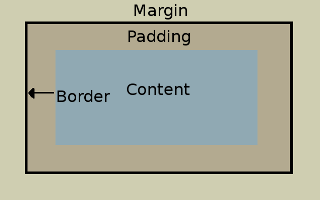

If you think of a building a house. The HTML is the builder, they create the structure. Put up the walls, frame the windows and doors, and install the fixtures.
The CSS is the architect, they specify how the house will look. Where walls doors and windows will go, the shape of the house, the colour, the type of fixtures to use.
The DOM is the building regulations. It specifies how things must be built, base rules on how things can interact with each other. It ties the builder and architect together in how things are to be done.
Unlike a house, a website is continuously being rebuilt as the browser refreshes. Changes can be made to the DOM which will change the website as it’s rebuilt.
Boxifying design is a technique for developing a website from a concept. The concept is broken up into boxes making it easier to design the components of the website and how they interact with each other.
The box model is the make-up of every element used on a webpage. From the centre out the box consists of; Content, Padding, Border, and Margin.
